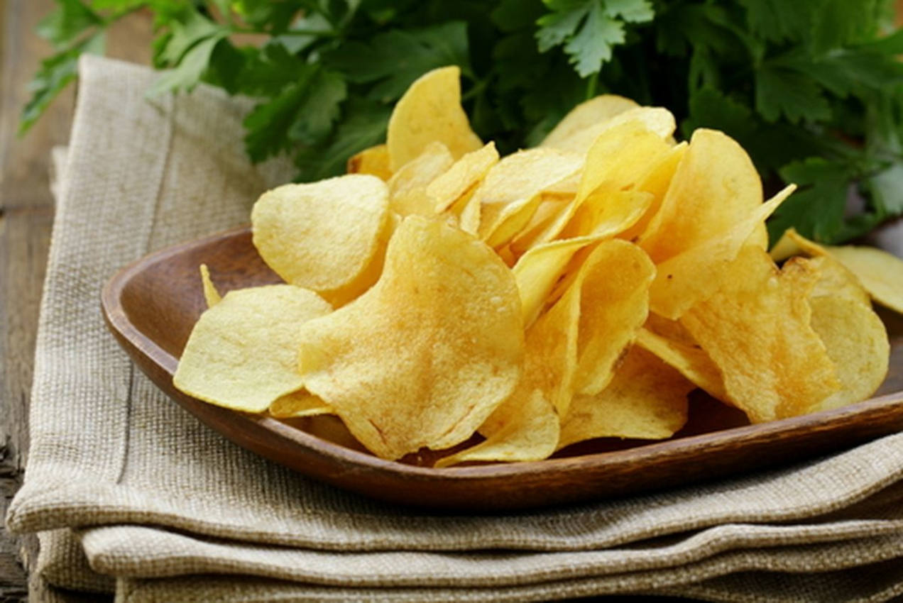

Batatas chips
Otima escolha, Batata Chips é uma delicia mesmo. Agora vamos cozinhar!
Você vai precisar de:
Para a batata chips:
- 1 kg de batata
- azeite quanto baste
- sal a gosto
- pimenta-do-reino a gosto
Para o molho
- 1 copo de iogurte desnatado.
- 2 colheres (sopa) de azeite.
- 2 colheres (sopa) de cheiro-verde.
- 1 dente de alho
- 1/2 limão (suco)
- sal a gosto
Modo de preparo:
Batatas Chips:
- Corte as batatas em fatias finas.
- Coloque-as em um tabuleiro untado com azeite.
- Cubra com azeite a gosto.
- Tempere com sal e pimenta-do-reino.
- Leve ao forno preaquecido a 180º C por 25 minutos.
Molho
- Em um mixer, bata o iogurte, com o azeite, cheiro-verde picado, alho e suco de 1/2 limão.
- Tempere com sal e pimenta a gosto.
